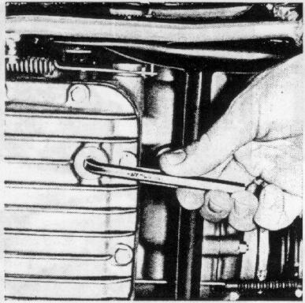
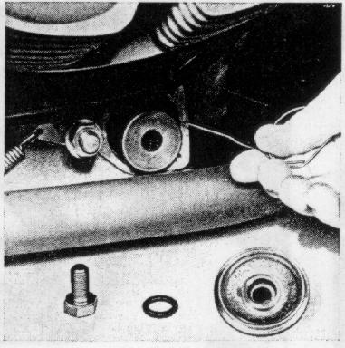
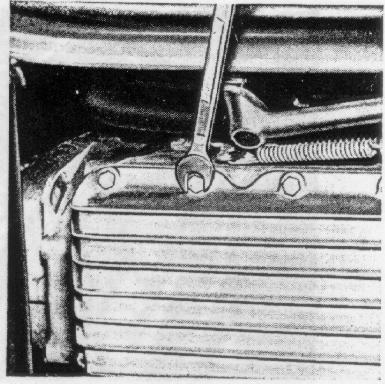

Change engine oil, only while engine is hot, during the Summer
months every 3000 miles or after no more than 6 months.
During the Fall, Winter, and Spring months (below +50oF)
every 1500 miles or after no more than 3 months.
Unscrew socket head screw (allen wrench size 8),
let old oil run out and screw drain plug back in tightly,
watch for perfect tightness.
If the oil filter shall be renewed during the oil change,
at first dismount filter and then drain oil.
Figure 16
16

Total capacity:
4.2 pints + .5 pint when oil filter is changed.
Oil level
to the upper mark on the dip stick, never higher, see
figure 14.
Type of Oil:
See
Technical Data
Replace Filter Cartridge
every 3000 miles when changing engine oil.
Remove cover after unscrewing the three
allenhead screws (allen wrench size 4).
Unscrew hex head screw (wrench size 17),
lay aside with filter cover and o-ring.
Pull out filter cartridge with thin wire hooks
and install new filter cartridge with new gaskets.
Figure 17
17

Remove oil pan
after the first 1000 miles by unscrewing the allen-head
screws (allen wrench size 5), clean thoroughly including
oil screen and reinstall with a new gasket.
Figure 18
18

{kind=link}